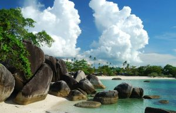
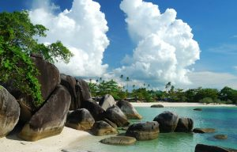

Kabupaten Belitung
Nama Belitung makin populer sejak munculnya novel "Laskar Pelangi" karya Andrea Hirata. Pulau yang terkenal sebagai penghasil timah ini menawarkan surga wisata yang dijaminn akan membuatmu terpukau.
Ciri khas pantai di Kepulauan Belitung adalah batu granit raksasa yang tersebar di segala penjuru. Air laut yang biru jernih,pasir putih,dan pepohonan kelapa di bibir pantai adalah kombinasi sempurna untuk ciptakan momen liburan tak terlupakan.
Sejarah
Wilayah Provinsi Kepulauan Bangka Belitung, terutama Pulau Bangka berganti-ganti menjadi daerah taklukan Kerajaan Sriwijaya dan Majapahit. Setelah kapitulasi dengan Belanda, Kepulauan Bangka Belitung menjadi jajahan Inggris sebagai "Duke of Island". 20 Mei 1812 kekuasaan Inggris berakhir setelah konvensi London 13 Agustus 1824, terjadi peralihan kekuasaan daerah jajahan Kepulauan Bangka Belitung antara MH. Court (Inggris) dengan K. Hcyes (Belanda) di Muntok pada 10 Desember 1816.
Kekuasaan Belanda mendapat perlawanan Depati Barin dan putranya Depati Amir yang dikenal sebagai perang Depati Amir (1849–1851). Kekalahan perang Depati Amir menyebabkan Depati Amir diasingkan ke Desa Air Mata Kupang NTT. Atas dasar stbl. 565, tanggal 2 Desember 1933 pada tanggal 11 Maret 1933 dibentuk Resindetail Bangka Belitung Onderhoregenheden yang dipimpin seorang residen Bangka Belitung dengan 6 Onderafdehify yang dipimpin oleh Ast. Residen.
Pantai Tanjung Tinggi
Pantai Tanjung Tinggi adalah pantai terkenal di Belitung yang digunakan sebagai salah satu lokasi syuting untuk film Laskar Pelangi. Pantai ini terletak di sebelah utara Belitung,tepatnya 37 km dari kota Tanjung Pandan. Berpasir putih,air laut jernih,dan batu granit super besar adalah ciri khas dari pantai ini. Ombak di Pantai Tanjung Tinggi relatif tenang sehingga Anda bisa berenang tanpa harus takut terbawa ombak. Di tepi pantai, terdapat warung-warung yang menjajakan seafood untuk memuaskan rasa lapar Anda setelah puas bermain air.
Pantai Tanjung Kelayang
Terletak di sebelah utara Pulau Belitung, Pantai Tanjung Kelayang adalah pantai kedua yang terkenal setelah Pantai Tanjung Tinggi. Yang khas dari pantai ini adalah Batu Kelayang yang merupakan maskot dari Sail Wakatobi - Belitung 2011
Tanjung Kelayang terdiri dari dua bagian,yaitu sebelah barat dengan gugusan batu granit dan sebelah timur berupa hamparan pasir putih nan cantik.
Pulau Lengkuas
Objek wisata ketiga yang terkenal di Belitung adalah Pulau Lengkuas. Pulau ini berada di sebelah utara Pulau Belitung. Anda hanya perlu menempuh jarak sekitar 30 menit untuk menyeberang ke pulau ini. Hal yang menarik dari Pulau Lengkuas adalah mercusuar yang menjulang tinggi di tengah-tengah pulau.
 
